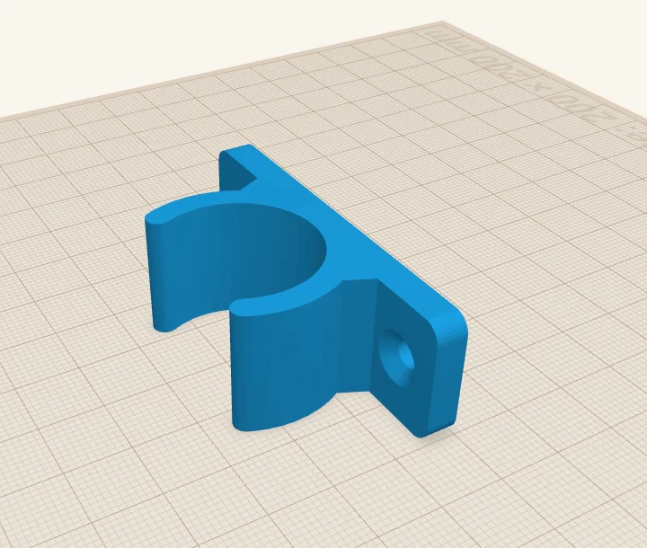
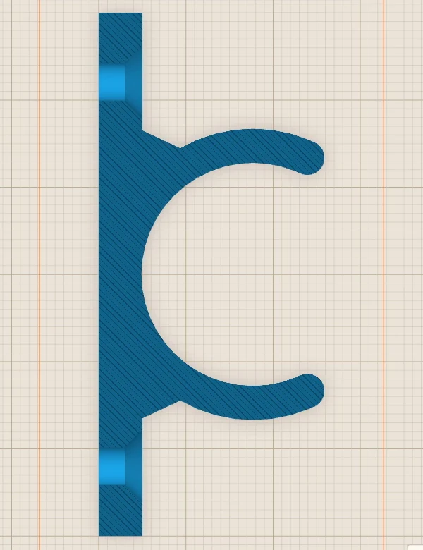

Using an AI agent to drive ScottiCAD
ScottiCAD now speaks MCP, the protocol AI agents use to work with other programs. Type a simple request in plain language, and your favourite AI agent can work directly with ScottiCAD, building your model in the ScottiCAD window while you watch. Here is a complete, end-to-end demo.
 Scotti
Scotti
· 5 min read
ScottiCAD now has an MCP server. MCP, the Model Context Protocol, is a protocol that AI agents such as Claude Code use to interact with other programs. With MCP, you can ask your agent for a part in plain words and watch it build the part in an ordinary ScottiCAD window, one shape at a time.
AI and functional models
Agentic AI is fast becoming a tool for everyone from graphic designers to software engineers. However, there's a right way and a wrong way to use AI. When people first started using agentic AI to create 3D models, the designs might have looked pretty, but they did not print well. The AI agents focused on appearance, using 3D modelling tools and approaches that work great for game assets but, when printed, give you excessive overhangs, meshes with holes, and so on.
ScottiCAD is designed for functional printing, and ScottiCAD's MCP server lets the agent build up the model by combining a series of shape primitives. It doesn't wave a magic wand and construct a model from thin air: it builds it up a shape at a time, just like you would. This helps to yield models that print well and function well.
The prompts
A prompt is the text that you give an AI to ask it to perform a task. While designing and refining this part, I typed four requests, one after the other, and nothing else:
- "Make me a wall bracket for a 25 mm pipe, with two countersunk M4 screw holes."
- "Make the pipe hole 0.2 mm looser, please."
- "Show me a cut-away so I can check the screw holes go all the way through."
- "Export it as bracket.3mf."
Here's the whole session. I have sped up the video because it takes the AI agent a while to think. The speed is shown in the corner, but nothing is cut out.
What the agent did
It didn't write a script. Left to itself, an agent often writes and runs a ScottiCAD script, but I wanted to see it work the way you would, so I denied the run_script tool in Claude Code's permissions. That left it ScottiCAD's ordinary editing tools: add a shape, size it, make it a hole, group. Every one of those calls shows up in the window as it happens.
- It planned first. It decided on a snap-in clip: a flat flange against the wall, a C-shaped clamp round the pipe with an opening narrower than the pipe, so the pipe snaps in, and a countersunk hole in the flange on each side.
- It built it from shapes. A Rounded Plate for the flange, a cylinder for the clamp, a cylinder hole for the pipe, an outline hole to cut the opening, outlines for small gussets where the clamp meets the flange, two thin cylinders to round off the tips, and ScottiCAD's Countersunk Hole shape for the screws.
- It checked its own work. It took screenshots from several angles and cut it open with section view. When resizing had squashed the rounded tips, it saw that in a screenshot and resized each tip again.
- It answered the follow-ups in place. "0.2 mm looser" meant ungrouping, widening the pipe hole from 25.4 to 25.6 mm and regrouping. It said which way it had read the request (0.2 mm on the diameter, not each side) and what else that changed: the clamp wall is 0.1 mm thinner, and the opening 0.2 mm wider, so the snap is a little easier.
- It saved its work. It saved the design and an STL when it had finished, and saved the looser version under a new name, so the first one was still there.

For the cut-away it used the section view tool, sliced through the bracket at the height of the screw holes, and looked straight down:

You stay in charge
The agent works in the same window you do. Part way through I turned the view with the mouse, selected everything and deleted it, then pressed Ctrl+Z to bring it back. The agent carried on as if nothing had happened, because from its perspective nothing had.
- You see everything. There's no hidden model somewhere else. What the agent changes, you see change.
- Undo works as usual. Each change the agent makes is an ordinary undo step.
- It asks first. Claude Code asks your permission before each tool call unless you tell it not to. For the recording I'd allowed ScottiCAD's tools in advance, so it didn't stop to ask.
--rootfences in your files. Start ScottiCAD with--rootand the agent can only open, save, import and export inside the folder you give it.
Setting it up
You need ScottiCAD v0.2.0 or later. For Claude Code, one command is sufficient to add it:
claude mcp add scotticad -- C:\ScottiCAD\scotticad.exe --mcp --root C:\AI-designsUse the path where you unpacked ScottiCAD, and a folder of your own for the designs (make the folder first). Then start Claude Code: ScottiCAD opens in its own window as the session starts, ready for you to ask for a part. It closes when you end the session, asking first if you want to save.
If you'd rather keep one ScottiCAD open between sessions, start it with the automation API and connect to that instead:
C:\ScottiCAD\scotticad.exe --api 127.0.0.1:47800 --root C:\AI-designs
claude mcp add scotticad-live -- C:\ScottiCAD\scotticad.exe --mcp-connect 127.0.0.1:47800Claude Desktop and other agents that speak MCP work too. The details, including the Claude Desktop settings, are in the MCP guide.
Things to know
- Every session is different. The agent doesn't do the same thing twice. I used Claude Code with Claude Opus 5.5, recorded several takes of this request and picked one. They all built a working bracket, but not the same bracket.
- Check what it makes. It's good at following a plan and checking its own screenshots, but it's still guessing at things like how tight a snap fit should be. Print a test piece before you print ten.
- Be specific. "25 mm pipe" could mean the outside or the bore. The agent said which it assumed. Saying it up front saves a round trip.
- It's slower than a script. Building shape by shape took the agent a little over two minutes. For a part you'll make in many sizes, ask it to write a script instead.
More from Scotti's Corner
- Getting 3D-printed parts to fit together 1 November 2026
- Screws in 3D prints: inserts and nut traps 31 October 2026
- Your first ScottiCAD script 30 October 2026
- Putting text on your 3D prints 30 October 2026
- Three tools for people who actually print 30 October 2026